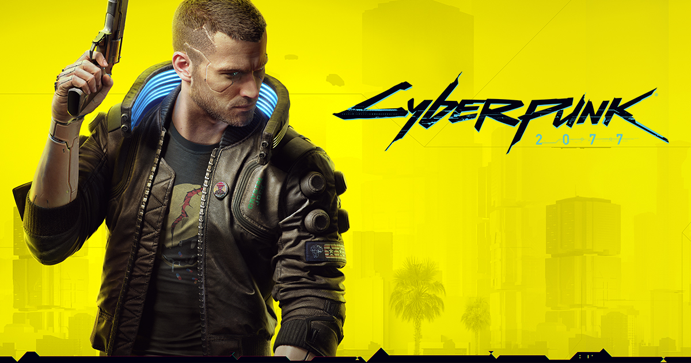

ARCHIVE / PREVIEWS / ORIGINAL 2018–2019 PROJECT
Back to Night City
Cyberpunk 2077
The bold yellow image that led the original Super Review homepage. Revisit the preview concept from the 2018 project.

From the original collection
The original homepage featured a Cyberpunk 2077 preview banner. No complete preview article was included in the original project files.
Inside the original gallery
Open an image to view it at full size.